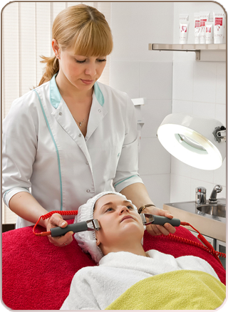
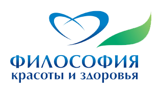

Понедельник - Суббота
10:00 - 21:00
обед 13:00 - 14:00
Воскресенье выходной
10:00 - 21:00
обед 13:00 - 14:00
Воскресенье выходной
-
Контакты:
- +7-705-171 55 29 Марина
- 67-85-95 Рабочий
- E-mail: info@salon.ru

Косметология
Аппаратная косметология.(Skin master +, Guinot).
Профессиональные процедуры по уходу за лицом Guinot (Франция):
HYDRADERMIE (Гидрадермия) — процедура ионизации, подходит для всех типов кожи, используется эксклюзивная аппаратура, всесторонний уход с более глубоким проникновением активных ингредиентов,
входящих в состав косметических продуктов, насыщение кожи кислородом и расслабляющий массаж лица
AROMATIC (Ароматик) — процедура на основе эфирных масел. Индивидуальная программа ухода для каждого клиента, растительные концентраты и точечный массаж, лечебная энергия эфирных масел, индивидуально создаваемая для каждого клиента маска с растительными концентратами
LIFTOSOME (Лифтосом) — процедура, дающая лифтинг эффект, восстанавливает овал лица, дарит молодость коже
BEAUTЕ NEUVE (Бьюти Нев) — пилинг-эффект с энзимами и фруктовыми кислотами, удаляет мертвые клетки и возвращает коже сияние, благодаря появлению на поверхности кожи новых молодых клеток
Процедуры на космецевтической линии LYSEDIA (Франция). Безинъекционная подтяжка лица Botomax (Lysedia) - косметическая альтернатива инъекциям токсина ботулизма
Маски Revitamax (Lysedia) — эффект мгновенной красоты на основе ревитализации и увлажнения кожи. Препарат получил высокую оценку женщин, ведущих активную профессиональную жизнь, связанную с частым появлениям на публике и требующую безупречного внешнего видаРекомендации: Аппликация маски один раз в две недели

ЗАПИСАТЬСЯ В САЛОН
Парикмахерские услуги
Интересно, что как бы ни ругали отечественную школу парикмахерского искусства, и как бы упорно ни старались отгородиться от наших дипломов на Западе, наши парикмахеры все равно пользуются большой популярностью. Дело в том, что западные школы в процессе обучения проводят занятия на манекенах и париках, в наших же школах ученики чаще всего ставят эксперименты друг на друге.
Парикмахерские услуги
Интересно, что как бы ни ругали отечественную школу парикмахерского искусства, и как бы упорно ни старались отгородиться от наших дипломов на Западе, наши парикмахеры все равно пользуются большой популярностью. Дело в том, что западные школы в процессе обучения проводят занятия на манекенах и париках, в наших же школах ученики чаще всего ставят эксперименты друг на друге.
Парикмахерские услуги
Интересно, что как бы ни ругали отечественную школу парикмахерского искусства, и как бы упорно ни старались отгородиться от наших дипломов на Западе, наши парикмахеры все равно пользуются большой популярностью. Дело в том, что западные школы в процессе обучения проводят занятия на манекенах и париках, в наших же школах ученики чаще всего ставят эксперименты друг на друге.
Парикмахерские услуги
Интересно, что как бы ни ругали отечественную школу парикмахерского искусства, и как бы упорно ни старались отгородиться от наших дипломов на Западе, наши парикмахеры все равно пользуются большой популярностью. Дело в том, что западные школы в процессе обучения проводят занятия на манекенах и париках, в наших же школах ученики чаще всего ставят эксперименты друг на друге.
Парикмахерские услуги
Интересно, что как бы ни ругали отечественную школу парикмахерского искусства, и как бы упорно ни старались отгородиться от наших дипломов на Западе, наши парикмахеры все равно пользуются большой популярностью. Дело в том, что западные школы в процессе обучения проводят занятия на манекенах и париках, в наших же школах ученики чаще всего ставят эксперименты друг на друге.
Парикмахерские услуги
Интересно, что как бы ни ругали отечественную школу парикмахерского искусства, и как бы упорно ни старались отгородиться от наших дипломов на Западе, наши парикмахеры все равно пользуются большой популярностью. Дело в том, что западные школы в процессе обучения проводят занятия на манекенах и париках, в наших же школах ученики чаще всего ставят эксперименты друг на друге.